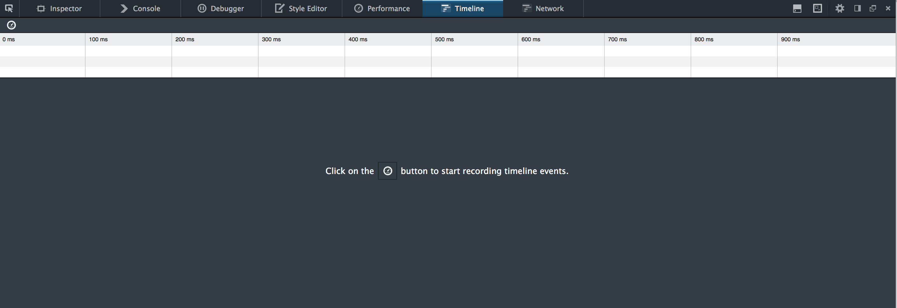

Firefox Developer Edition First Impressions
An in-depth breakdown of my first impressions with the new Firefox Developer Edition browser.
Read more ▼
Mozilla just released their Firefox Developer Edition browser made specifically for web developers. As both an exercise in my work as a UX developer as well as a chance to blog about something, I thought I’d take the new browser for a spin, with a step-by-step thought process on my initial impressions with this new browser aimed specifically at professionals like me. This is raw and unedited: I think there is something to be gained from getting raw feedback of one’s thoughts and opinions as they appear from the stream of consciousness, so I chose to edit this only with pictures in between to showcase what I was looking at while journaling my thoughts.
Onboarding
The first thing that stood out were the Developer Tools. It’s in the center of the screen (proximity) and is white around a dark background (contrast). I feel like if this is supposed to be catered to developers that would seem obvious to me - wrenches definitely equite to tools. But whatever. I was also a bit thrown off by the dark headers as well, that dark chrome made it hard for me to determine that those were even tabs. Is this supposed to be a ode to the old hacker terminal days where everything is black? Not sure I agree with it, while my editor and terminal are dark, the chrome around them is stock OS gray, so I’d appreciate not messing with the OS chrome.
I clicked Next: WebIDE…and I can’t click on it, because the stupid “Confirm” dialogue has a lower Z-index than this popup. and I can’t see it. Really they couldn’t figure this out before launching it? I chose Not Now…can’t you ask this after like the 3rd use? I want to prove this is indeed a better browser before going all in.
Try WebIDE is next on my tour, so why is it not next to the Dev Tools? I would think if you (Mozilla) believes this to be the 2nd most important feature, it should go right next to the most important feature, right? I am interested to try this first since I already have experience with Dev Tools in Chrome, and I’d really like to integrate my app with this browser. I click “Next: Sync”.
Keep my browser in Sync? Eh, I don’t care about this. Most of my customers aren’t using mobile version of Firefox so this is where I stop the tour. “No thanks.”
First Window
Now I see this notification at the bottom of the browser about automatic data sharing. In the age of privacy concerns, with developers as your audience, why are you telling me this? Either get the info you need to get anonymously or just open up this dialogue from the beginning so I can set my sharing settings in the wizard.
This brings me to the Advanced tab. Advanced? I’m in the Developer edition of Firefox, this is already an advanced edition, and now my first experience I have to do something Advanced even for developers? Groan. I’m not exactly familiar with the term “telemetry” so I decide to Google it with Apple+T and I’m brought to a new tab intro.
“What’s this page?” it’s a start page, I don’t need to read the blurb about it. I guess Mozilla has to dumb this down, but that much? If you are a developer and this start page has you lost, I think you’ve got bigger problems on your hands…but at least Google is right there. So I type in “telemetry” and decide I just don’t want to enable this. I want the health report and the crash report…for myself. I don’t want to share this with Mozilla unless I feel the need to. Now I’m reminded of old crash reports from old versions of Windows…and in retrospect that seems like a great way to do it. Inform the user of the crash, let them view the report, and only after consent, send it. I like that.
No “submit” button. Maybe I’m getting old, but a lack of confirmation makes me uneasy that the settings have actually been changed, but it is a desktop app so I guess I feel better about that.
Close tab. I closed all 3 tabs and now the whole window has disappeared. Ugh, I hate this! I hate that applications do this, your empty state should keep the window open with a prompt like “what do you want to do next?” with things such as “open a new tab” or “check out the browser tools”. In OSX especially, I can’t tell you how many times I’ve thought my OS needed to be restarted because I tabbed over to a blank application thinking my computer was freezing, only to realize everything was fine but all of the tabs were closed. This empty state in OS design needs to end! New tab…
Developer Tools
First thing I want to do is try the Dev Tools…dang. So many options! Too many, the first one is “Enable”…you should have asked this during the tour, if I’m a dev I want this enabled by default, that was the whole point of downloading this browser.
Console Pane
I pop open my company’s website and it starts with the Console tab open. I see this handy little JS info (I can tell it’s related to JavaScript not just because I know that preventing default behavior is a common event idiom in JavaScript) but also because it’s color coded. Nice! I clicked on the source linked and it brings me to the line as I would suspect, but I wish this operated like Angular does with web errors linked to documentation on the Angular page.
It would be great if I could click on this warning message and it brings me to the MDN page that describes why this is a warning…this is a Mozilla product after all, and it would be great to integrate the MDN with this browser. I clicked the brackets icon in the bottom left to see if the expander would unzip our front end code (it did), because I wanted to verify this warning. I don’t think we actually use that getPreventDefault() function (turns out we don’t, it’s in the jQuery core source code).
I wish I could turn off vendor-only warnings and errors since this is out of our control, but it does make for a neat opportunity to make a PR for jQuery code…if this wasn’t already fixed in the latest version. We should probably upgrade.
Inspector, Debugger and Style Panes
The Inspector tab seems pretty cut-and-dry, feels just like Chrome Inspector, which I like. I esepecially like all of the dashed lines to help with alignment, the designer in me really appreciates this. I’ve already started with the Console tab. The Debugger tab I’ll try in a second pass with this when I’m working on code, same with the Style Editor, but the Performance tab is intriguing me at the moment.
Performance Pane
I love that the prompt to click on the button allows me to click on it inside of the call to action. I don’t have to move over to where the button is, I can just click it inside of the prompt to get the task done, and this is a great, subtle UX that I love.
After clicking on a few pages and doing a few interactions I stopped recording. I decided to show an expanded view of what I recorded which lead me to a few concerns. The first is that I can’t expand the graph, which bums me out. That graph is WAY too small for me to see any appreciable data from it, I wish I could click above the table and drag it so that the graph gets taller while the list of operations gets shorter. I also hate that they chose sky blue for the graph and then the background is a darker blue. Blue on blue is a usability nightmare when it comes to trying to separate the background from the foreground. I have NO idea why they decided to do this.
Clicking and dragging pops open a subset of functions userd in this time frame which is pretty rad. I click on the portion where our FPS was the lowest and the operations were the highest, but I’m disappointed that I can’t click on the individual towers, that I always have to click and drag to get a slice of function calls. Especially when this graph is so tiny, I feel like my precision will be negatively affected. So I click and drag on the tiny slice where things are at it’s worst…
…NOTHING? Nothing is here? This is gravely disappointing, if this is the biggest source of problems I would expect some function to be running that would reveal my problems. Guess I have to expand a bit more…

Okay I got somewhere, but only after being frustrated because there’s a snap-to mouse event on this Timeline. With the granularity I needed to drag, I really didn’t appreciate this. But at least my new version is getting me somewhere. It looks like mouseHooks.filter is pretty expensive, which is yet another jQuery function. We should really drop jQuery…my code is obfuscated so I don’t know exactly what j is but I bet I could figure it out if I clicked on the source and looked for j =…and there are a bunch of matches.
I don’t like that I can search for something without knowing exactly how many instances there are. This could be overwhelming, and if I knew there were say, 5 instances, at least the process of elimination could help me narrow which file it actually is in my code. A quick pass with Apple+G shows I’ve got over 30 instances of that, so I’ve given up. Maybe it will highlight the exact instance of j if I re-minify the file, since I know that the Inspector already goes to the line where the offending code is at.
I tried this and gave up because search always starts with the beginning of the file, and not at the beginning of the line that I’ve highlighted, which is a huge bummer to me. I wish it had some context of that, so I opened the gear next to search to see if I could find answers.
Auto prettifying source is pretty neat, so I check that, as is show Panes on startup (which is what I expected from my first start), but none of these seem to be helping me with my problem. The “Show Variables Filter Box” is neat but when I click it nothing happens…I’m assuming this will affect the Debugger pane if anything, but I see no change. Now I am severely disappointed. I guess the Performance pane will have to wait another run until I open this page up again on my local source.
Timeline Pane

Next is the Timeline tab, which again requires a button click to start, conveniently located right where I’m reading. I repeat the same interactions to get this lovely set of events.
I think what impressed me the most was that I got to watch it generate in real time. The click and drag functionality is neat and it’s really cool to see how this waterfall plays out as you are scrolling and clicking. At least for us, it’s all a tiny series of paints, style and reflows, I can’t tell if the consecutive reflows is a problem (I know you want to minimize them), but the chiclets are so small it makes me think we likely don’t have a problem with CSS performance on these pages. But a neat feature nonetheless.
Network Pane
Finally we reach the Network tab, which in my mind is likely way more important for performance than even the Performance or Timeline tabs. They should really rename the “Performance” tab because all of these are Performance-related tabs…Performance is for JS, Timeline is for CSS, and Network is for all the other stuff (verifying CDNs, TTL, etc.). No wonder my first impression of the Performance tab was that it was underwhelming, because I expected it to be the blanket tab for all of these performance features!
Anyway I’m digressing, I could Reload the page and see the Network requests, but I’m way more intrugied by this performance analysis, so I’m going to repeat my steps yet again to see if this performance audit (oh look, the name Performance again, why did you name that other tab Performance!) can reveal anything more magical than your traditional Network tab refresh can do.
Well this is pretty cool. It’s pretty much doing what WebPageTest does in order to summarize what assets you’re downloading on first view versus a repeat review. For having big banner images it’s pretty nice to see that we’re doing well on the images side, but dang we have way too much JavaScript being loaded for this to be an acceptable page load. Better cut that down! Upon refreshing the waterfall chart looks pretty typical, but it feels more integrated than Chrome does in terms of relaying information about headers, responses, and all of that.
Final Thoughts
Overally I’m pretty pleased with this - the translations from Chrome Inspector are straightforward enough that I want to explore more and start using this browser as the primary development browser, I don’t feel like I’ll be giving anything up by closing Chrome, which is nice. As far as initial impressions go, I think I can safely recommend that other developers download and install this browser as well! In Part 2, I’ll explore the WebIDE and in Part 3 I’ll explore the Valence.